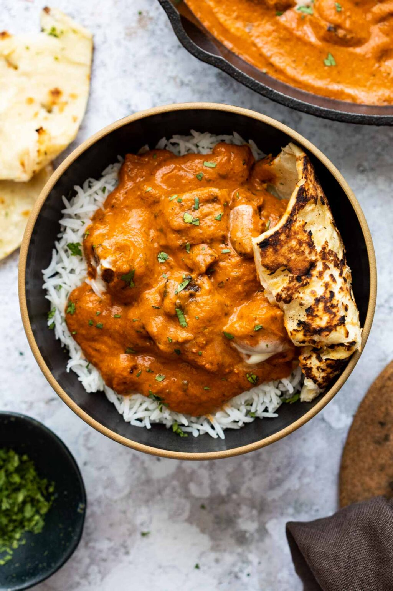

Chicken Masala

Chicken Masala is a delicious Indian dish made with chicken,
spices, herbs, onion, and tomatoes. It packs a nice punch without
being too much, and it's highly recommended anybody add this to
their palette.
Ingredients
- Boneless, skinless chicken thighs
- Plain greek yogurt
- Red chili powder
- Ginger garlic paste
- Onions
- Tomatoes
- Cashew nuts
- Butter
- Dried chillies
- Ketchup
- Kasuri methi
- Cinnamon
- Cardamom
- Salt
Steps
- Mix all ingredients under marinade, and then add chicken.
- Mix well, cover, and set aside to marinate for 30 minutes.
- Once the chicken has been marinated, heat a tablespoon of oil
in a cast iron skillet or non-stick pan.
- Add the chicken pieces and sear them on each side for 2-3
minutes. Remove them from pan and set aside.
- For the gravy, heat 1 tablespoon oil and 1 tablespoon butter
in a pan.
- Add cinnamon, cardamom, cloves, whole red chilies, and garlic.
Saute for 1 minute.
- Add onions and saute on high heat for 2-3 minutes until pink.
- Add tomatoes and cash nuts. Mix once, reduce the flame to a simmer,
cover and cook for 10-15 mins until the tomatoes break down. Turn
off the flame and let the mixture cool.
- Once cool, transfer to a blender and blend until smooth.
- Transfer the mixture back to the pan.
- Add chili powder, ketchup, salt, and 1/4 cup water. Bring
this to a boil. Reduce the flame to low, and cover and cook
for 25 minutes.
- Add chicken pieces, and simmer for 10 minutes.
- Stir in the kasur methi and fresh cream.
- Serve with naan and rice if desired. Enjoy!